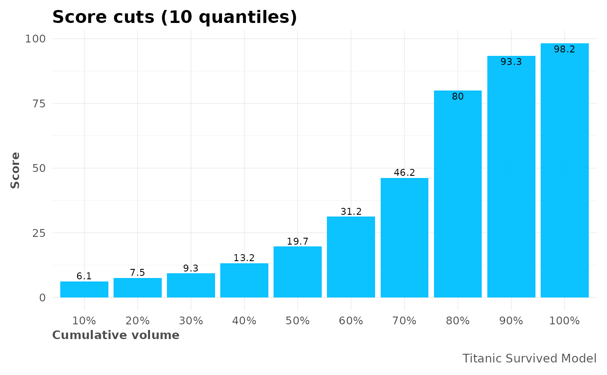

This function cuts by quantiles any score or prediction.
mplot_cuts( score, splits = 10, model_name = NA, subtitle = NA, table = FALSE, save = FALSE, subdir = NA, file_name = "viz_ncuts.png" )
| score | Vector. Predicted value or model's result. |
|---|---|
| splits | Integer. Numer of separations to plot |
| model_name | Character. Model's name |
| subtitle | Character. Subtitle to show in plot |
| table | Boolean. Do you wish to return a table with results? |
| save | Boolean. Save output plot into working directory |
| subdir | Character. Sub directory on which you wish to save the plot |
| file_name | Character. File name as you wish to save the plot |
Plot with performance results by cuts.
Other ML Visualization:
mplot_conf(),
mplot_cuts_error(),
mplot_density(),
mplot_full(),
mplot_gain(),
mplot_importance(),
mplot_lineal(),
mplot_metrics(),
mplot_response(),
mplot_roc(),
mplot_splits(),
mplot_topcats()
Sys.unsetenv("LARES_FONT") # Temporal data(dfr) # Results for AutoML Predictions head(dfr$class2) #> tag scores #> 1 TRUE 0.3155498 #> 2 TRUE 0.8747599 #> 3 TRUE 0.8952823 #> 4 FALSE 0.0436517 #> 5 TRUE 0.2196593 #> 6 FALSE 0.2816101 # Data mplot_cuts(dfr$class2$scores, splits = 5, table = TRUE) #> range cuts #> 1 20% 0.074886 #> 2 40% 0.132404 #> 3 60% 0.312343 #> 4 80% 0.799710 #> 5 100% 0.982415 # Plot mplot_cuts(dfr$class2$scores, model_name = "Titanic Survived Model") 